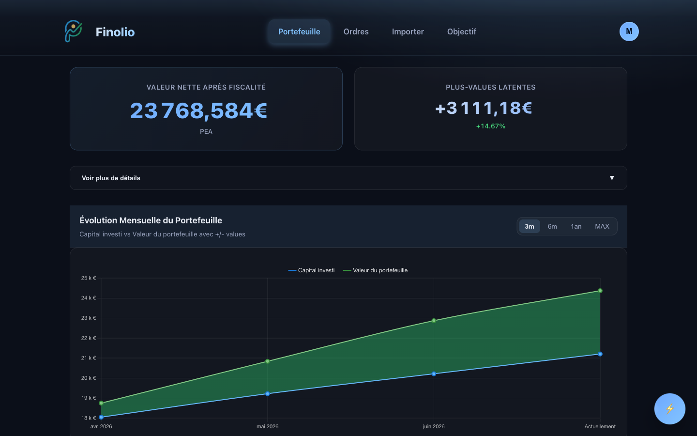
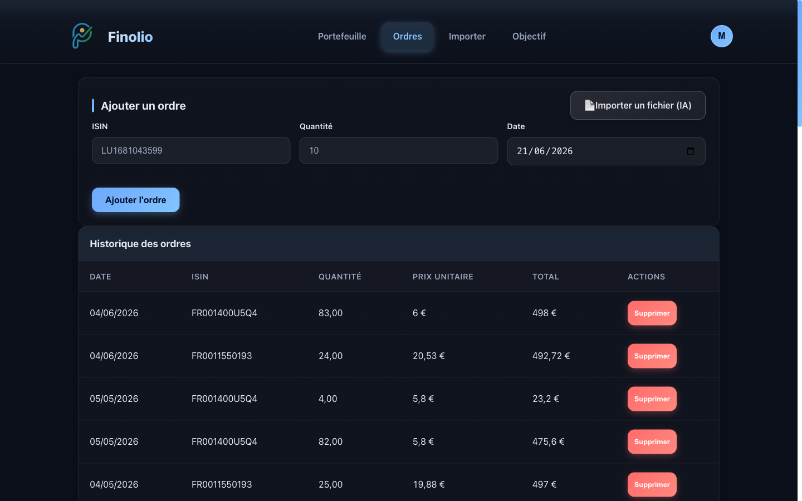
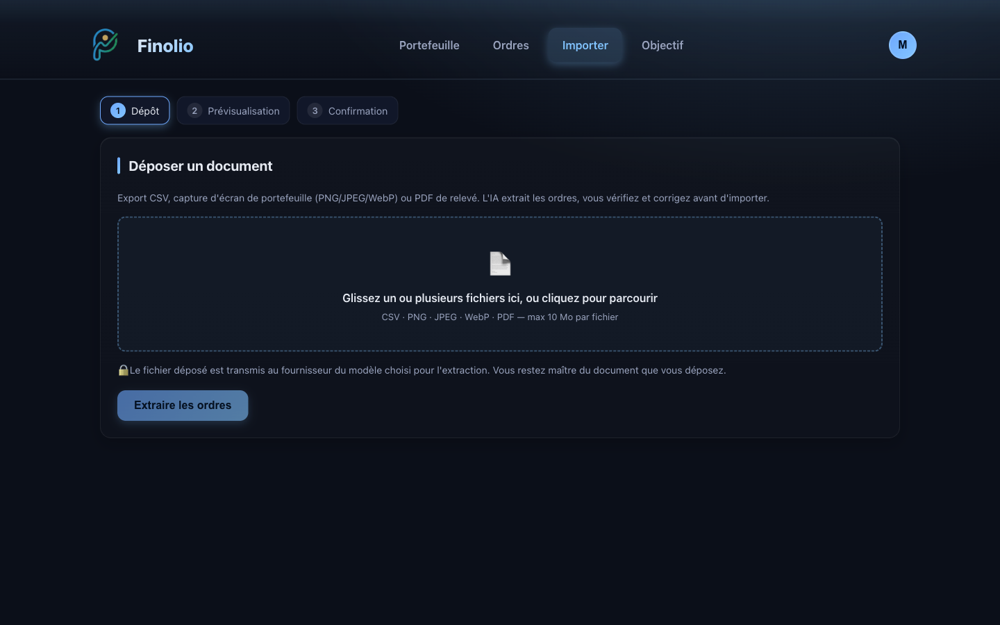
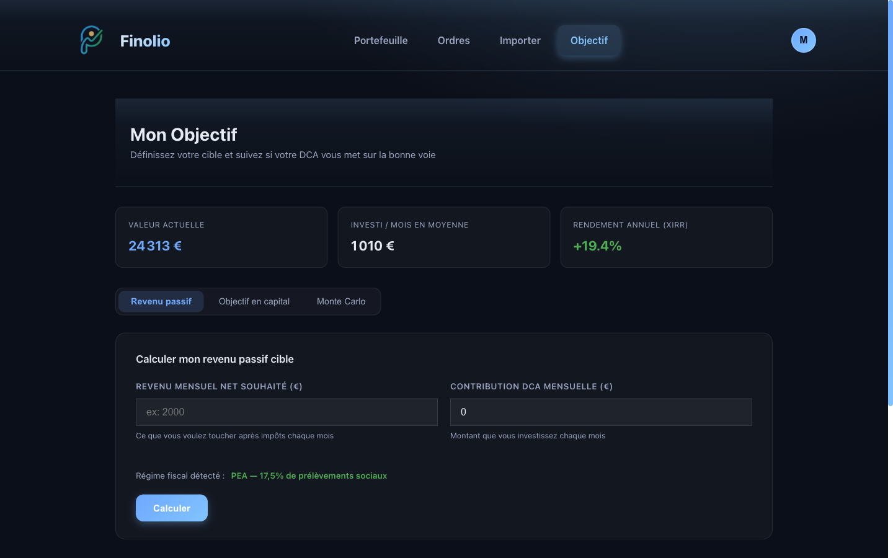

A portfolio tracker — and a Vertex AI use case:
importing broker history from any document with an LLM.
Cloud Run · europe-west1
Flask · Firebase · Stripe · Vertex AI
Finolio is a personal investment-portfolio tracker: record your buys, it values positions live, projects wealth & passive income, and imports your broker history with a single drag-and-drop — parsed by an LLM on Vertex AI.

Google Cloud Run, CI/CD via Cloud Build: push main → build → deploy.
Flask · Firebase · Stripe freemium · Vertex AI.
europe-west1 → EU data residency, one perimeter.
Gemini on Vertex AI turns any document into structured orders; everything downstream (Orders → Portfolio → Goal) consumes its output.
Firebase identity everywhere, Stripe freemium gates premium, and a per-line /position/<isin> drill-down.
Finolio is a standard CRUD finance app — the one place AI changes the game is getting the data in.



Everything runs under one service account with IAM roles —
including roles/aiplatform.user for Vertex. No API keys for the GCP-native path.
Getting an investor's buy history into the app is the real friction — and the two usual options both fail.
Account aggregation means handing over broker credentials — a real security & trust barrier, plus setup friction. Many users simply won't do it.
Dozens of buys, ISIN by ISIN, date by date. Slow and error-prone — people give up before finishing.
/importDrop any document that contains the data — a screenshot of your broker history, a CSV from your own Google Sheet, a PDF statement — the AI reads it and extracts your orders. No broker login, no manual entry.
Once the user sends a document, the inputs are heterogeneous:
A clean broker export.
A mobile-app capture — ISIN usually missing.
A scanned statement.
We must:
→ A classic document-extraction + entity-resolution ML problem.
| Need | Vertex answer | Benefit |
|---|---|---|
| Prod security | ADC / IAM auth (service account, aiplatform.user) | Zero API keys to store / rotate |
| Output reliability | Controlled generation (response_schema = Pydantic) | Schema-valid JSON guaranteed by the platform |
| Documents | Native PDF (Gemini ingests raw PDF) | No rasterization, vector text kept, fewer tokens |
| Entity resolution | Embeddings text-multilingual-embedding-002 | Approximate / multilingual names |
| Decision-making | In-house evaluation harness | Model choice justified by metrics |
| Infra coherence | Same GCP project as Cloud Run | EU data residency, one perimeter |
response_schema = ImportResultOne model in production — Gemini 2.5 Flash on Vertex AI. It returns schema-valid orders directly; post-processing then keeps only the buys and fills any missing ISIN.
I don't ask the model to "please reply in JSON". On Vertex I attach the exact output
schema (response_schema) with temperature=0, and the platform
guarantees valid, structured orders every time — no parsing hacks, no retries.
To fill a missing ISIN, a free local text match runs first; the paid Vertex embedding is called only when that match is unsure. Semantic accuracy at a fraction of the cost — detailed on the next two slides.
Offline benchmark on a labelled golden set (5 docs, 10 orders) — run once to choose the model, not computed live in the app. Reproducible: python -m evaluation.run_eval
| Model | F1 | Precision | Recall | ISIN exact | Latency p50 | p95 | Cost/doc |
|---|---|---|---|---|---|---|---|
| gemini-2.5-flash | 1.00 | 1.00 | 1.00 | 90 % | ~6 s | ~8 s | $0.0004 |
| gemini-2.5-pro | 1.00 | 1.00 | 1.00 | 90 % | ~20 s | ~27 s | $0.0015 |
Conclusion: Flash equals Pro in quality for ~4× cheaper and ~3× faster →
ship Flash by default, keep Pro as fallback for documents flagged by a low confidence score.
These metrics live in the evaluation harness (offline) to justify the model choice. In production the live guardrail is the per-line confidence score — not F1.
F1 1.00 · ~6 s · $0.0004/doc
Triggered by a low confidence line
Equal quality → pick the 4× cheaper, 3× faster model
Offline benchmark: 10 noisy fund names. Reproducible: python -m evaluation.bench_isin
| Strategy | Accuracy | Paid embedding calls |
|---|---|---|
| Text match only (local, free) | 80 % | 0 / 10 |
| Embeddings only (Vertex, paid) | 80 % | 10 / 10 |
| Confidence-routed hybrid | 90 % | 2 / 10 |
Why a simple "text match, else embeddings" fails: the text match almost always returns something — even when it's wrong — so it never actually falls back.
The fix — fall back on confidence: trust the free text match only when its score is high; otherwise ask the Vertex embeddings. That recovers hard cases (e.g. a fund named in French) with no regression, and the paid call fires on only 2 of 10 names.
All usage-based. The candidates I benchmarked before choosing — price $ / 1M tokens:
| Model | In | Out | Multimodal | Role |
|---|---|---|---|---|
| Gemini 2.5 Flash | 0.30 | 2.50 | ✅ +native PDF | default |
| Gemini 2.5 Pro | 1.25 | 10.0 | ✅ +native PDF | accuracy fallback |
| Qwen3-VL-Plus | 0.30 | 1.20 | ✅ | doc/OCR (benchmark) |
| GPT-5 mini | 0.25 | 2.00 | ✅ | benchmark |
| MiniMax M3 | 0.60 | 2.30 | ✅ | 1M context (benchmark) |
| Claude Haiku→Opus | 1–5 | 5–25 | ✅ | hard docs (benchmark) |
| DeepSeek V4 | 0.14 | 0.28 | ❌ text only | cheapest, CSV-only |
Cost levers: Flash default · MAX_FILE_SIZE 10 MB · MAX_PDF_PAGES 15 ·
lru_cache · similarity thresholds · hybrid cost-aware. Embedding ≈ 100× cheaper than generation; index = one-time fraction of a cent.
| Concern | Status | How |
|---|---|---|
| Auth & security | done | IAM service account, no keys for Vertex |
| Determinism | done | temperature=0, controlled generation |
| Guardrails | done | Per-line confidence, file/page caps, currency warnings |
| Quality gate | done | Eval harness = regression test before model/prompt change |
| Drift / monitoring | planned | Cloud Monitoring on latency/error; alert on confidence drop |
| Retraining loop | planned | User corrections → grow golden set → re-evaluate |
| Scale-out | roadmap | Pub/Sub + Dataflow batch, Cloud Storage, BigQuery |
| JD responsibility | What this project demonstrates |
|---|---|
| Design/deploy ML pipelines on Vertex AI | Gemini pipeline on Vertex AI, live on Cloud Run |
| End-to-end workflow (ingest → deploy → monitor) | Ingest → controlled generation → post-process → eval → guardrails |
| Translate requirements into scalable Vertex solutions | Product-driven feature, shipped on Vertex |
| Model Registry / Feature Store mindset | Versioned eval golden set + pre-computed embeddings index |
| Integrate GCP (BigQuery, GCS, Pub/Sub, Dataflow) | Roadmap — positioned, not faked |
| Monitor drift, alerts, retrain | Confidence routing + eval-as-gate + feedback loop |
| Documentation & knowledge sharing | This deck + docs/vertex-ai-import.md + reproducible evals |
Thank you — questions welcome.